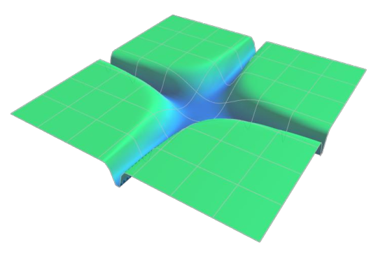
2026-10-15 Iliad Intensive
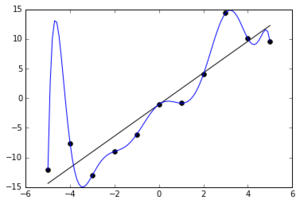
| empirical | expectation |
|---|---|
| loss (negative log-likelihood) \(L_n(\omega) = -\frac{1}{n}\sum_i \log p(x_i\vert\omega)\) | cross-entropy \(L(\omega) = \mathbb{E}[L_n(\omega)]\) |
| empirical entropy \(S_n = -\frac{1}{n}\sum_i \log q(x_i)\) |
entropy \(S = \mathbb{E}[S_n]\) |
| log-likelihood ratio \(I_n(\omega) = \frac{1}{n}\sum_i \log \frac{q(x_i)}{p(x_i\vert\omega)}\) | relative information \(I(\omega) = \mathbb{E}[I_n(\omega)]\) |
| relationship \(L_n(\omega) = S_n + I_n(\omega)\) |
relationship \(L(\omega) = S + I(\omega)\) |
| empirical | expectation |
|---|---|
| free energy \(F_n = -\log \int_\Omega e^{-n L_n(\omega)}\, p(\omega)\, d\omega = -\log p(x_{[n]})\) | cross-entropy \(F = \mathbb{E}[F_n]\) |
| normalized free energy \(F^0_n = -\log \int_\Omega e^{-n I_n(\omega)}\, p(\omega)\, d\omega = \log \frac{q(x_{[n]})}{p(x_{[n]})}\) | relative information \(I_{q\Vert p}(X^n) = \mathbb{E}[F^0_n]\) |
| relationship \(F_n = n S_n + F^0_n\) |
relationship \(F = n S + I_{q\Vert p}(X^n)\) |
| relative information | role | |
|---|---|---|
| maximum likelihood | \(I_n(\omega) = L_n(\omega) - S_n\) | minimized at the MLE \(\hat{\omega}\) |
| stochastic gradients | \(I(\omega) = I_{q\Vert p(\cdot\vert\omega)}(X)\) | minimized over \(\omega\) by sampling |
| model selection | \(\mathbb{E}[F_n] - n S = I_{q\Vert p}(X^n)\) | minimized over models |
| Bayes information criterion | \(F^0_n \approx n I_n(\hat{\omega}) + \frac{d}{2} \log n\) | Laplace approximation |
| Bayesian posterior | \(\int q\, n L_n\, d\omega + I_{q\Vert p}(\Omega)\) | minimized at the posterior |
| Bayes generalization error | \(G_n = I_{q\Vert p^*}(X)\) | measured, not minimized |
| Regular. \(p(z|x, y) \propto e^{-(z_1-x)^2 - (z_2-y)^2}\), \(z \in \mathbb{R}^2\) \(I(x, y) = x^2 + y^2\), \(\partial^2 I(0, 0) = \left(\begin{smallmatrix} 2 & 0 \\ 0 & 2 \end{smallmatrix}\right)\) |
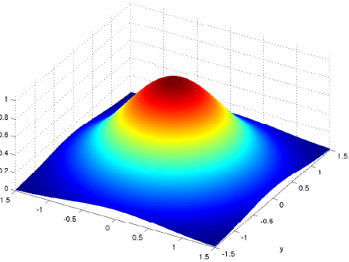 |
| Singular. \(p(z|x, y) \propto e^{-(z - xy)^2}\), \(z \in \mathbb{R}\) \(I(x, y) = (xy)^2\), \(\partial^2 I(0, 0) = 0\) |
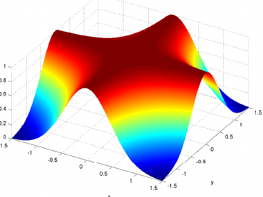 |
| Singular. \(p(z|x, y) \propto e^{-(z - y^2 + x^3)^2}\), \(z \in \mathbb{R}\) \(I(x, y) = (y^2 - x^3)^2\), \(\partial^2 I(0, 0) = 0\) |
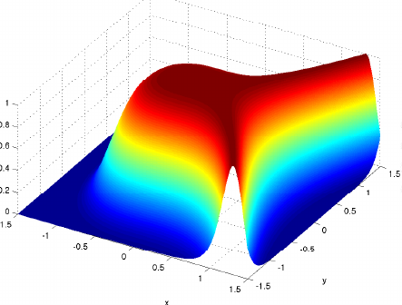 |
\[ \begin{aligned} V(\varepsilon) &= \int_{\{\omega \in \Omega \,\mid\, f(\omega)<\varepsilon\}} d\omega \\ &\rightarrow C\varepsilon^\lambda (-\log \varepsilon)^{\theta-1}. \end{aligned} \]
| Regular. \(f(x,y) = x^2 + y^2\) \((\lambda, \theta) = (1, 1)\) |
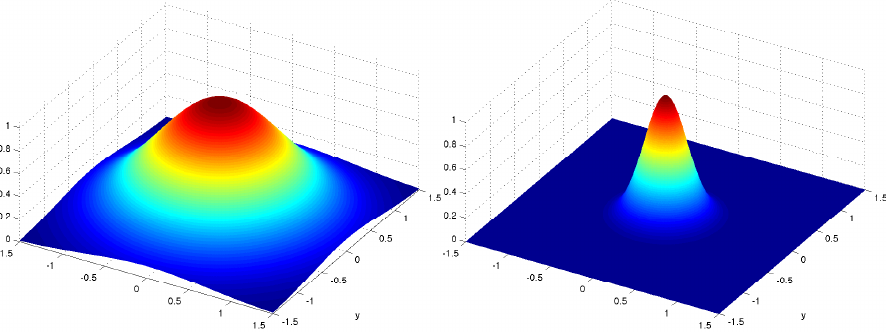 |
| Singular. \(f(x,y) = (xy)^2\) \((\lambda, \theta) = (\frac{1}{2}, 2)\) |
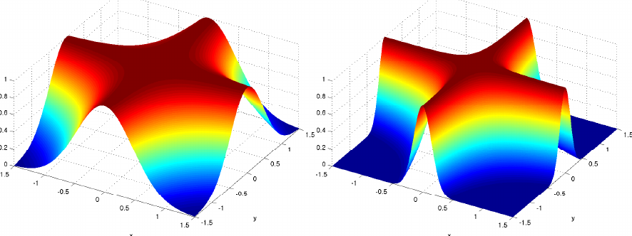 |
| Singular. \(f(x,y) = (y^2 - x^3)^2\) \((\lambda, \theta) = (\frac{5}{12}, 1)\) |
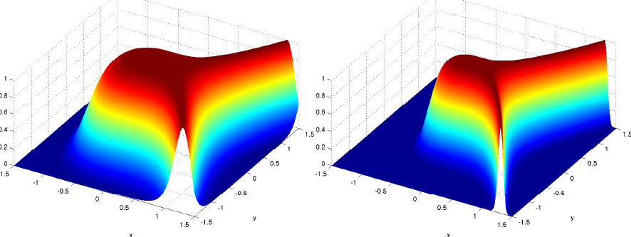 |
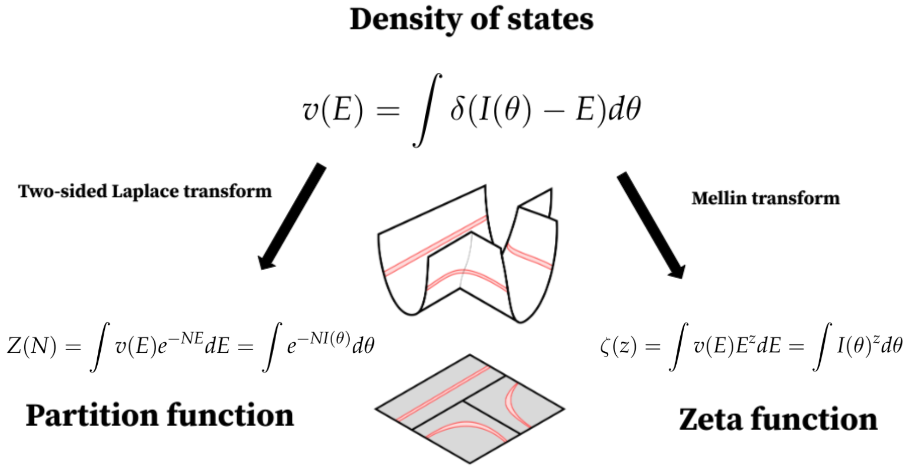
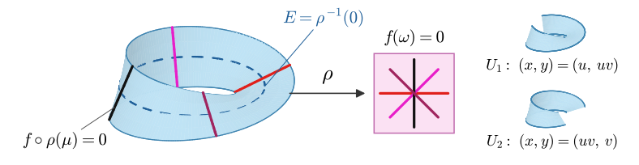
The learning coefficient \(\lambda\) of a singular model at a parameter \(\omega_0\) with respect to the true distribution \(q\) is the RLCT of the relative information \(I(w) := I_{q\Vert p(\cdot \vert \omega)}(X)\) at \(\omega_0\).
The learning coefficient \(\lambda\) of a singular model over \(\Omega\) is the minimum of learning coefficients over all \(\omega \in \Omega\). Its multiplicity is the highest one available for \(\lambda\).
Regular models have \(\lambda = d/2\). Singular models have \(\lambda \leq d/2\).
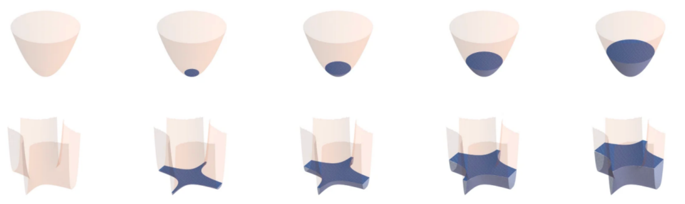
Theorem (Watanabe). If \(q\) is realizable, then the free energy or stochastic complexity has an asymptotic expansion (as \(n \rightarrow \infty\)) \[ F_n = n S_n + \lambda \log n - (\theta -1) \log \log n + O_p(1) \] where \(\lambda\) is the learning coefficient over \(\Omega\) with respect to \(q\), and \(\theta\) its multiplicity.
For regular models, \(\lambda = d/2\) and \(\theta = 1\). Since \(n L_n(\hat{\omega}) = n S_n + O_p(1)\) at the MLE \(\hat{\omega}\), this recovers the Bayesian Information Criterion \[ F_n = n L_n(\hat{\omega}) + \frac{d}{2} \log n + O_p(1). \]
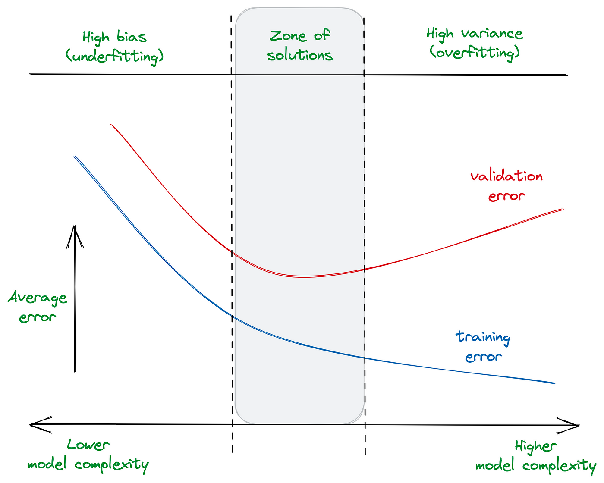
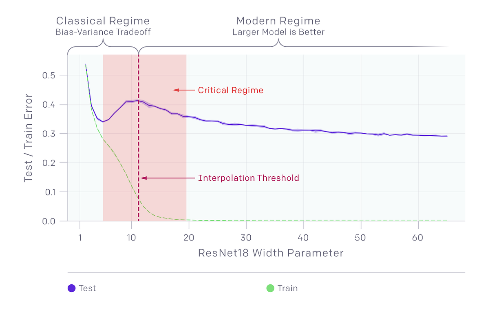
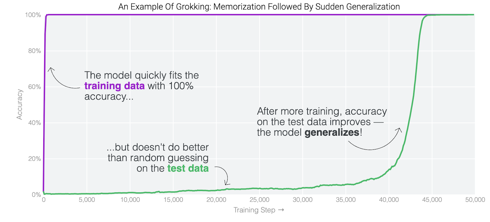
Double descent. Test error falls again as width grows past interpolation threshold.
Grokking. Test accuracy jumps long after the training data is memorized.
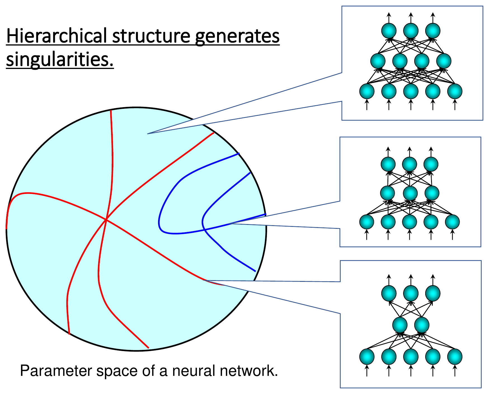
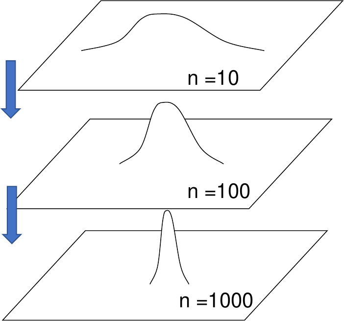
In regular models, the posterior concentrates on the best parameter as \(n\) grows: a gradual increase of confidence.
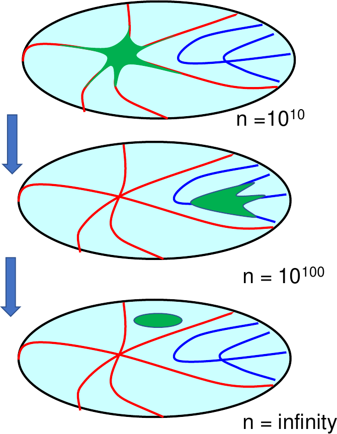
In singular models, the posterior jumps from one singularity to another. Even a huge \(n\) is far from infinity, so deep learning always remains in a singular state.
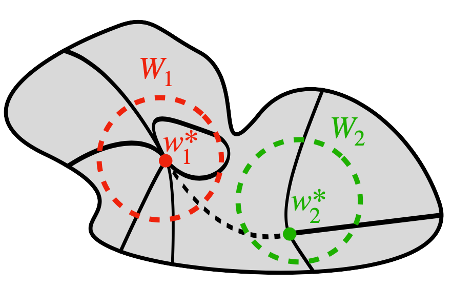
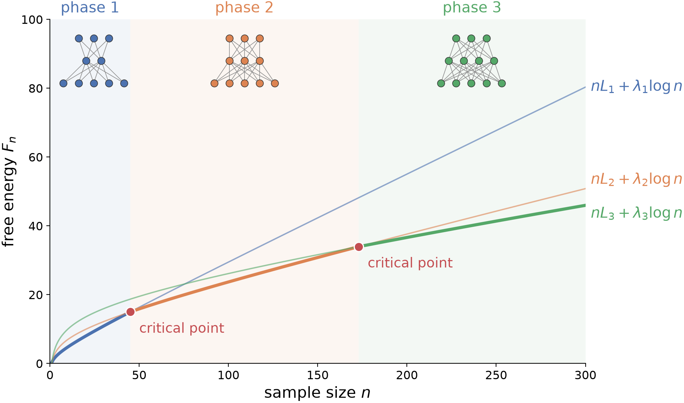
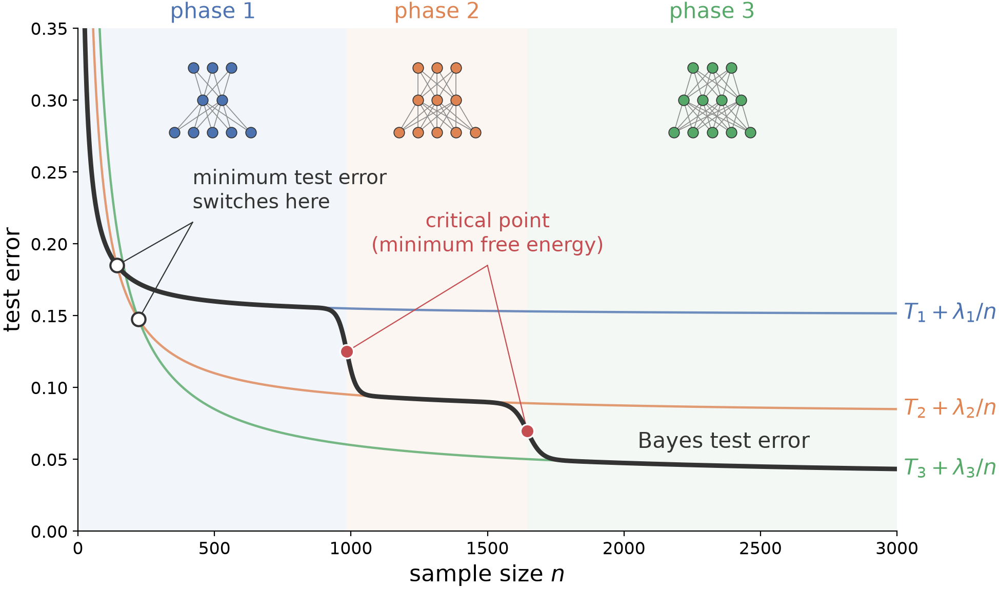
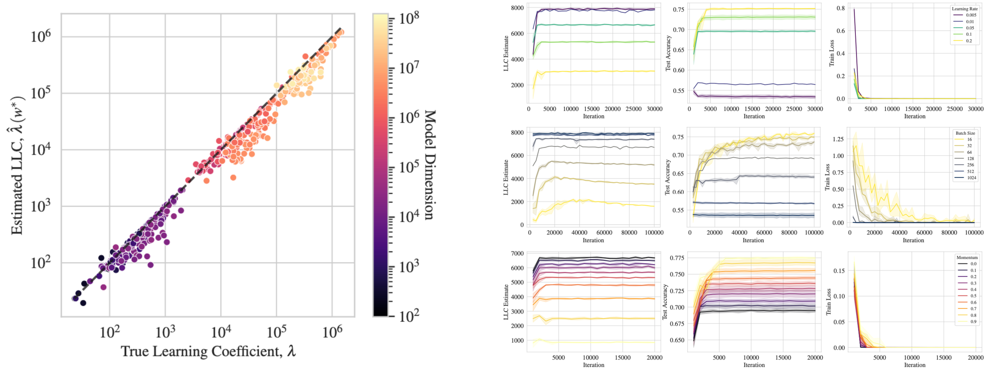
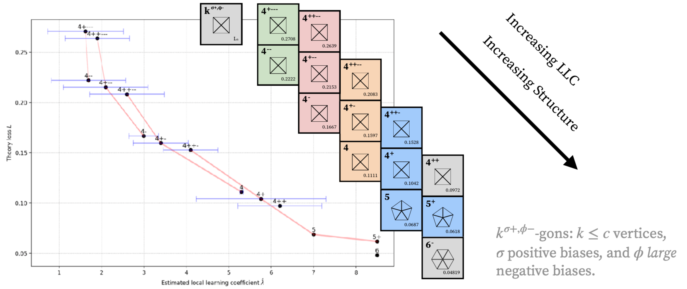
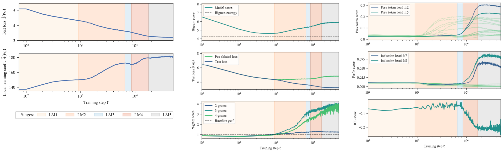
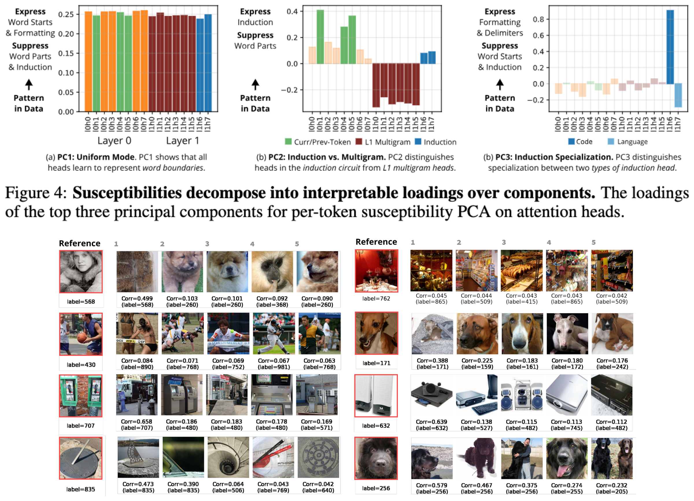
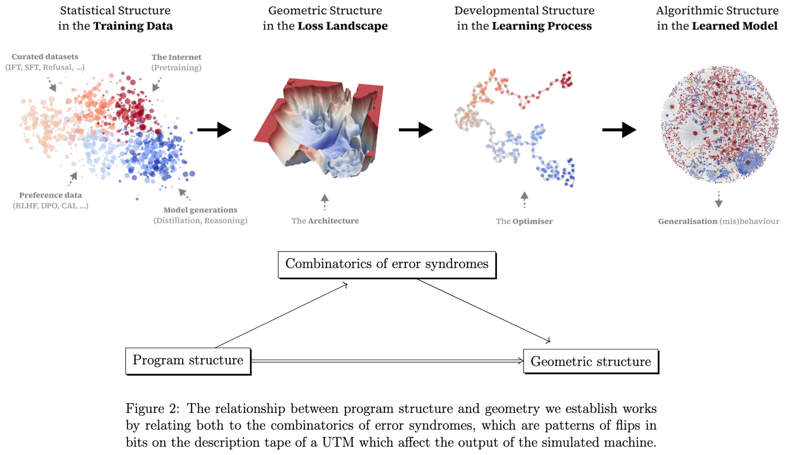
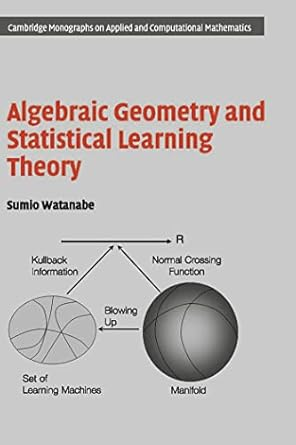
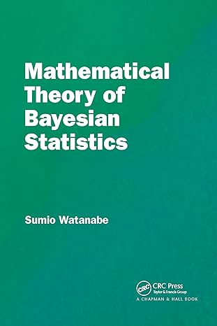